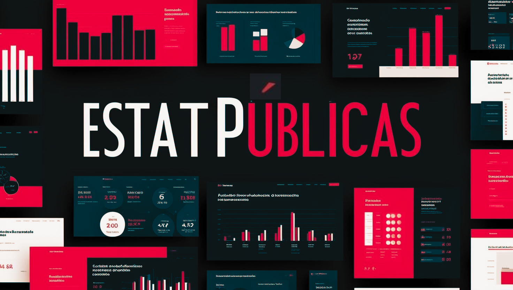

Início

Sobre
O EstatPúblicas é um Grupo de Pesquisa em Estatísticas Públicas criado com o intuito de congregar pesquisadores que trabalham com produção de estatísticas e discussão de métodos de coleta, limpeza, qualidade, cálculo e disseminação de dados e informações.
Missão
"Nossa missão é desenvolver conhecimento e ferramentas estatísticas que auxiliem na resolução de desafios públicos complexos, apoiando governos, organizações e a sociedade civil no uso eficaz de dados para promover bem-estar social e equidade."
Linhas de pesquisa
- 📑 Métodos e qualidade de dados: estudos de metodologia de cálculo, discussões sobre fontes de dados, procedimentos de revisão, crítica e validação e imputação de dados.
- 📈 Indicadores e Índices compostos: cálculos de indicadores nas temáticas demográficas, econômicas, sociais, ambientais e transversais e aos estudos da análise desses indicadores. Além disso, incorpora as pesquisas que envolvem os estudos de índices como o Índice de Desenvolvimento Humano Municipal e suas variações e o Índice Mineiro de Responsabilidade Social.
- 🤖 Transformação digital: estudos e aplicações da transformação digital em diferentes etapas da produção da estatística desde a extração de dados, rotinas de processamento até a produção de produtos de disseminação como plataformas de dados.
Princípios fundamentais
Assista ao vídeo para entender os princípios fundamentais das estatísticas oficiais.
Contato
Líderes do grupo:
Caio César Soares Gonçalves
caio.goncalves@fjp.mg.gov.br
Renato Vale Santos
renato.vale@fjp.mg.gov.br